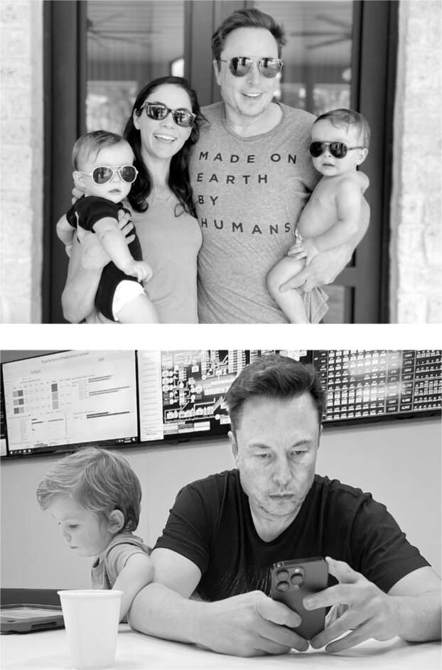

Cặp song sinh của Shivon
Một điều có thể đã khiến Musk phân tâm vào Lễ Tạ ơn năm 2021 — hoặc khiến anh chọn bị phân tâm bởi các vòi phun và van của động cơ Raptor — là một tuần trước đó, anh đã trở thành cha của thêm hai đứa con, một cặp song sinh trai và gái. Người mẹ là Shivon Zilis, nhà đầu tư AI sáng dạ mà anh tuyển dụng vào năm 2015 để làm việc tại OpenAI và cuối cùng trở thành giám đốc điều hành hàng đầu của Neuralink. Cô đã trở thành người bạn rất thân, người bạn đồng hành trí tuệ và đôi khi là bạn chơi game của anh. "Đó là một trong những tình bạn ý nghĩa nhất trong cuộc đời tôi, cho đến nay", cô nói. "Ngay sau khi gặp anh ấy, tôi đã nói, 'Tôi hy vọng chúng ta sẽ là bạn suốt đời'."
Zilis đã sống ở Thung lũng Silicon và làm việc tại văn phòng Neuralink ở Fremont, nhưng cô chuyển đến Austin ngay sau khi Musk chuyển đến, và cô là một phần trong vòng tròn xã hội thân thiết của anh. Grimes coi cô là bạn và thỉnh thoảng cố gắng sắp xếp hẹn hò cho cô. Tại bữa tiệc nhỏ năm 2020 mà Musk và Grimes tổ chức cho Halloween, một ngày lễ yêu thích, Zilis đã có mặt cùng với Mark Juncosa, trung úy năng động của SpaceX của Musk.
Grimes và Zilis kết nối với những khía cạnh trái ngược trong tính cách của Musk. Grimes mạnh mẽ theo một cách vui vẻ nhưng cũng bốc lửa, thường xuyên cãi vã với Musk và chia sẻ sự hấp dẫn của anh với những xáo trộn. Ngược lại, Zilis nói, "Trong sáu năm, Elon và tôi chưa bao giờ, chưa bao giờ cãi nhau, chưa bao giờ tranh luận." Đó là một tuyên bố mà ít người có thể đưa ra. Họ nói chuyện với nhau một cách nhẹ nhàng, trí tuệ.
Zilis tự quyết định không kết hôn. Nhưng cô thừa nhận mình khao khát làm mẹ. Mong muốn làm mẹ của cô càng được thôi thúc bởi những lời thuyết phục của Musk về tầm quan trọng của việc sinh nhiều con. Ông lo ngại tỷ lệ sinh giảm là mối đe dọa đến sự tồn tại lâu dài của ý thức loài người. "Mọi người sẽ phải xem việc sinh con là một nghĩa vụ xã hội," ông nói trong một cuộc phỏng vấn năm 2014. "Nếu không, nền văn minh sẽ diệt vong." Em gái Tosca của ông, một nhà sản xuất phim tình cảm thành công sống ở Atlanta, cũng chưa từng kết hôn. Elon khuyến khích cô sinh con và khi cô đồng ý, ông đã giúp cô tìm một phòng khám, chọn người hiến tinh ẩn danh và chi trả cho thủ tục.
"Anh ấy thực sự muốn những người thông minh có con, nên anh ấy đã khuyến khích tôi," Zilis nói. Khi cô quyết định sẵn sàng, ông đề nghị làm người hiến tinh để những đứa trẻ mang gen của mình. Ý tưởng này hấp dẫn cô. "Nếu phải lựa chọn giữa một người hiến tinh ẩn danh hoặc làm điều đó với người mình ngưỡng mộ nhất trên thế giới, thì đối với tôi đó là một quyết định khá dễ dàng," cô nói. "Tôi không thể nghĩ ra bộ gen nào tốt hơn cho con mình." Còn một điểm cộng nữa: "Dường như điều đó sẽ khiến anh ấy rất hạnh phúc."
Cặp song sinh của họ được thụ thai bằng phương pháp thụ tinh trong ống nghiệm. Vì Neuralink là một công ty tư nhân, nên không rõ các quy định về mối quan hệ nơi làm việc được áp dụng như thế nào. Vào thời điểm đó, vấn đề này không được đặt ra vì Zilis không nói cho mọi người biết cha ruột là ai.
Vào một ngày tháng 10 năm đó, cô dẫn Musk và các giám đốc điều hành cấp cao khác của Neuralink đi tham quan một cơ sở mới mà công ty đang xây dựng ở Austin. Nó bao gồm một văn phòng và phòng thí nghiệm trong một trung tâm thương mại gần nhà máy Giga Texas của Tesla và một loạt chuồng trại gần đó để nuôi lợn và cừu được sử dụng cho các thí nghiệm cấy ghép chip. Cô mang thai cặp song sinh, mặc dù không ai ở đó biết rằng chúng cũng là con của Musk. Sau đó, tôi hỏi liệu điều này có khiến cô cảm thấy khó xử không. "Không," cô trả lời, "Tôi rất vui mừng khi sắp được làm mẹ."
Zilis gặp biến chứng vào cuối thai kỳ và phải nhập viện. Cặp song sinh chào đời sớm bảy tuần nhưng khỏe mạnh. Musk được ghi là cha trên giấy khai sinh, nhưng hai đứa trẻ—một bé trai tên Strider Sekhar Sirius và một bé gái tên Azure Astra Alice—được đặt theo họ của Zilis. Cô cho rằng anh sẽ không tham gia nhiều vào việc nuôi dạy chúng. "Tôi nghĩ anh ấy sẽ đóng vai trò như một người cha đỡ đầu," cô nói, "vì anh ấy có rất nhiều việc phải làm."
Thay vào đó, Musk đã dành rất nhiều thời gian cho cặp song sinh và gắn bó với chúng, mặc dù theo cách riêng của anh, hơi thiếu tập trung về mặt cảm xúc. Ít nhất mỗi tuần một lần, anh sẽ ở lại nhà của Zilis, cho các con ăn và ngồi trên sàn với chúng trong khi anh tham dự các cuộc họp ảo buổi tối muộn về Raptor, Starship và Tesla Autopilot. Với bản tính của mình, anh không âu yếm như những người cha bình thường. "Có một số việc anh ấy không thể làm vì anh ấy có phần khác biệt về mặt cảm xúc," Zilis nói. "Nhưng khi anh ấy đến, chúng sáng lên và chỉ nhìn anh ấy, điều đó cũng khiến anh ấy vui vẻ."
Bé Y
Mặc dù đang gặp trục trặc trong mối quan hệ, Grimes và Musk vẫn rất vui vẻ khi cùng nhau nuôi dạy X đến nỗi họ quyết định sinh thêm một đứa con nữa. "Tôi thực sự rất muốn anh ấy có một cô con gái," cô nói. Vì cô đã trải qua lần mang thai đầu tiên khó khăn và cơ thể mảnh mai khiến cô dễ gặp biến chứng, họ quyết định sử dụng phương pháp mang thai hộ.
Điều này dẫn đến một tình huống kỳ lạ, khó xử, chẳng khác nào một vở kịch Pháp hiện đại. Khi Zilis đang nằm viện ở Austin do biến chứng thai kỳ, thì người mang thai hộ đứa con gái mà Musk và Grimes bí mật thụ tinh trong ống nghiệm cũng đang ở đó. Vì người mang thai hộ gặp vấn đề, Grimes đã ở cùng cô ấy. Cô không biết Zilis đang ở phòng bên cạnh, hay Zilis cũng đang mang thai con của Musk. Có lẽ không ngạc nhiên khi Musk quyết định bay về phía Tây vào cuối tuần Lễ Tạ Ơn đó để giải quyết những vấn đề đơn giản hơn của kỹ thuật tên lửa.
Khi con gái của họ chào đời vào tháng 12, chỉ vài tuần sau khi hai người em song sinh cùng cha khác mẹ ra đời, Musk và Grimes bắt đầu quá trình dài lựa chọn tên. Ban đầu, họ đặt tên con là Sailor Mars, theo tên một trong những nữ anh hùng trong bộ truyện tranh Sailor Moon, kể về những nữ chiến binh bảo vệ hệ mặt trời khỏi thế lực xấu xa. Cái tên này có vẻ phù hợp, dù không hẳn truyền thống, cho một đứa trẻ có thể định mệnh đặt chân lên sao Hỏa. Đến tháng 4, họ quyết định đặt cho con một cái tên bớt nghiêm túc hơn (vâng), vì "con bé lấp lánh và tinh nghịch lắm", Grimes nói. Họ chọn Exa Dark Sideræl, nhưng rồi đầu năm 2023 lại định đổi tên con thành Andromeda Synthesis Story Musk. Để đơn giản, họ chủ yếu gọi con là Y, hoặc đôi khi là Why?, với dấu chấm hỏi là một phần của tên. "Elon luôn nói chúng ta cần phải tìm ra câu hỏi trước khi có thể biết câu trả lời cho vũ trụ", Grimes giải thích, đề cập đến điều anh học được từ cuốn The Hitchhiker's Guide to the Galaxy.
Khi Musk và Grimes đưa Y về nhà từ bệnh viện, họ đã giới thiệu con với X. Christiana Musk và những người họ hàng khác cũng có mặt, mọi người chơi đùa trên sàn nhà như một gia đình bình thường. Musk không hề nhắc gì đến việc vừa có cặp song sinh với Shivon. Sau một giờ chơi đùa và bữa tối nhanh chóng, anh bế X lên máy bay riêng đến New York, nơi đứa trẻ ngồi trên đùi anh tại lễ trao giải Nhân vật của năm của tạp chí Time.
Giải thưởng của tạp chí đánh dấu đỉnh cao trong sự nổi tiếng của anh. Năm 2021, anh trở thành người giàu nhất thế giới, SpaceX trở thành công ty tư nhân đầu tiên đưa phi hành đoàn dân sự lên quỹ đạo, và Tesla đạt giá trị thị trường nghìn tỷ đô la bằng cách dẫn đầu ngành công nghiệp ô tô thế giới trong bước chuyển lịch sử sang kỷ nguyên xe điện. "Ít ai có ảnh hưởng đến cuộc sống trên Trái đất, và có thể cả cuộc sống ngoài Trái đất, hơn Musk", biên tập viên Ed Felsenthal của Time viết. Tạp chí Financial Times cũng vinh danh anh là Nhân vật của năm, tuyên bố: "Musk đang khẳng định mình là doanh nhân thực sự sáng tạo nhất trong thế hệ của mình". Trong cuộc phỏng vấn với tờ báo, Musk nhấn mạnh sứ mệnh thúc đẩy các công ty của mình. "Tôi chỉ đang cố gắng đưa con người lên sao Hỏa, mang lại tự do thông tin với Starlink, thúc đẩy công nghệ bền vững với Tesla và giải phóng con người khỏi sự mệt nhọc khi lái xe", anh nói. "Chắc chắn con đường xuống địa ngục phần nào được lát bằng những ý định tốt - nhưng phần lớn con đường xuống địa ngục được lát bằng những ý định xấu."

Với Shivon, Strider và Azure; tại Tesla với X